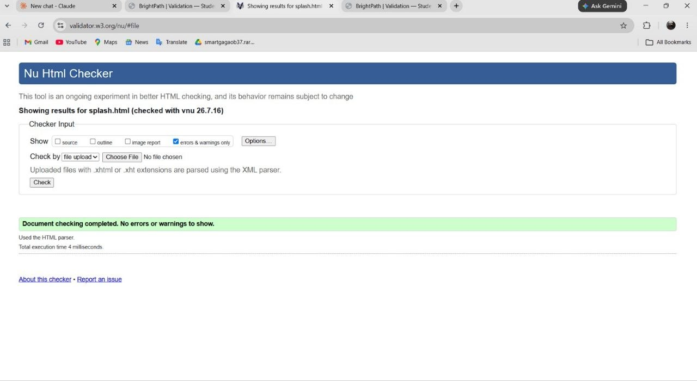
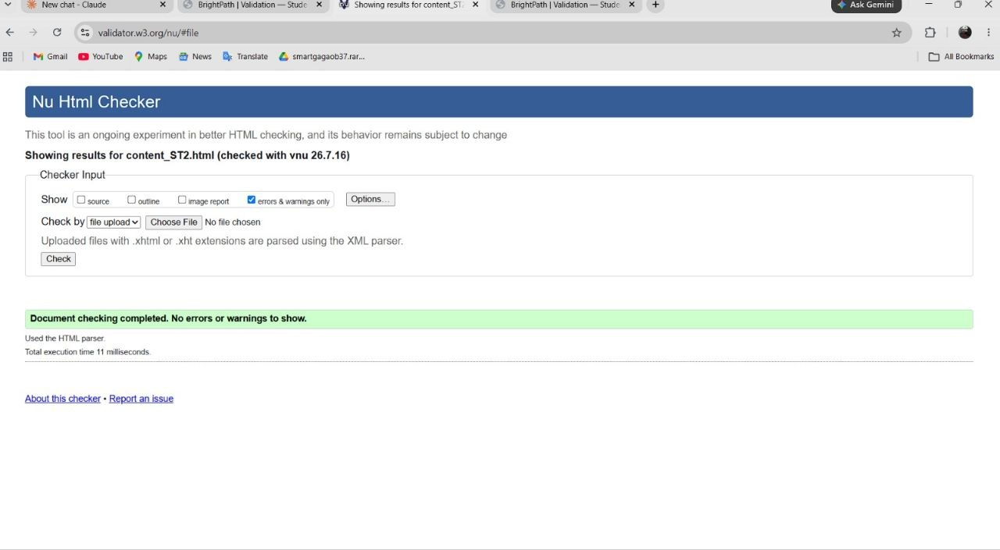
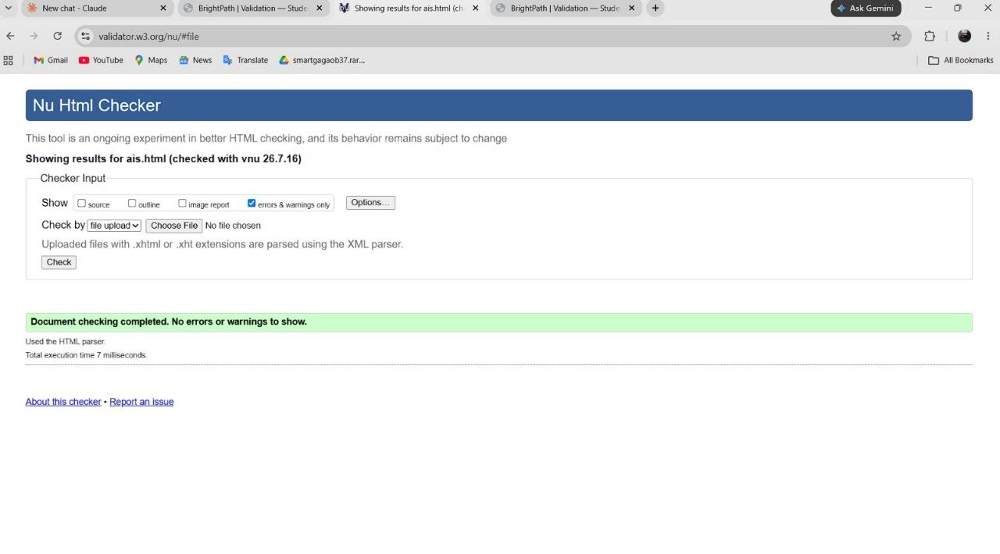

HTML validation evidence for the Splash Screen, Content Page (content_ST2.html), and Action Impact Simulator
| Page checked | splash.html |
|---|---|
| Tool | W3C Nu Html Checker (validator.w3.org/nu/), file upload method |
| Result | Pass — 0 errors, 0 warnings |

| Page checked | content_ST2.html |
|---|---|
| Tool | W3C Nu Html Checker (validator.w3.org/nu/), file upload method |
| Result | Pass — 0 errors, 0 warnings |

| Page checked | ais.html |
|---|---|
| Tool | W3C Nu Html Checker (validator.w3.org/nu/), file upload method |
| Result | Pass — 0 errors, 0 warnings |

Unlike some of the other pages on the site, all three of my pages passed with zero errors and zero warnings on the first submitted check. That wasn't luck so much as a few deliberate precautions taken while writing the markup, rather than something fixed afterwards:
On ais.html, each action card needed a value the JavaScript could read to calculate
impact score. Rather than inventing an ad-hoc attribute, I used data-points="…"
— the standard HTML5 data-* pattern the validator explicitly allows for
author-defined data, so it never flagged the attribute as unrecognised. The same page also needed
interactive cards without native <button> elements; aria-pressed
is only valid on elements with (or implying) role="button", so instead of forcing that
role onto an <article> containing a heading — which would likely have
produced an ARIA-usage warning — I used a dynamic aria-label update instead, as
explained on the Page Editor page.
On splash.html, since it doesn't use the shared header/nav/footer template, I had to
build its heading outline from scratch rather than inheriting one that Student 1 had already
validated. Keeping it to a single <h1> with no skipped levels avoided the
heading-order errors that showed up elsewhere on the site.
The main lesson was less about fixing mistakes and more about writing markup with the validator's rules in mind from the start — particularly around custom data attributes and ARIA roles, which are easy to get subtly wrong even when the page looks and behaves correctly in the browser.